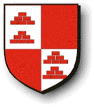

Antavla
31937634 Joakim Nielsen Bing

Far:
Niels Bing till Gunderslevholm (1371? - >1429)
Mor:
Kjöle Andersdatter Blaa
Född:
omkring 1388.
[1]
Barn med
31937635 Meinstrup
Barn:
Kjöle Jacobsdatter Bing (>1404 - )
Personhistoria
Årtal
Ålder
Händelse
1388?
Födelse omkring 1388
[1]
1404
Barnbarnet
7984408 Gjord Jensen Drefeld
dör 1404 Skåne, Sverige
[2]
>1404
Dottern
15968817 Kjöle Jacobsdatter Bing
föds efter 1404
[1]
>1429
Fadern
63875268 Niels Bing till Gunderslevholm
dör efter 1429
[1]
Källor
[1]
Martin Severin Eriksen
[2]
Flemming Stephansen